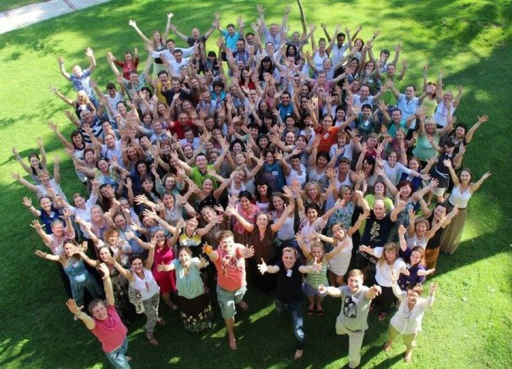
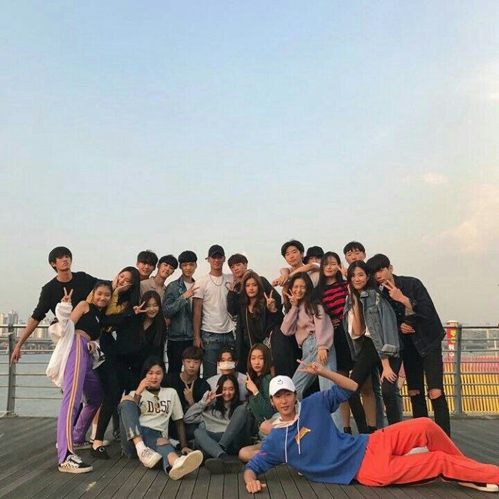
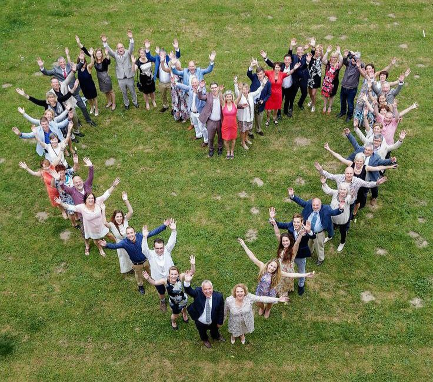
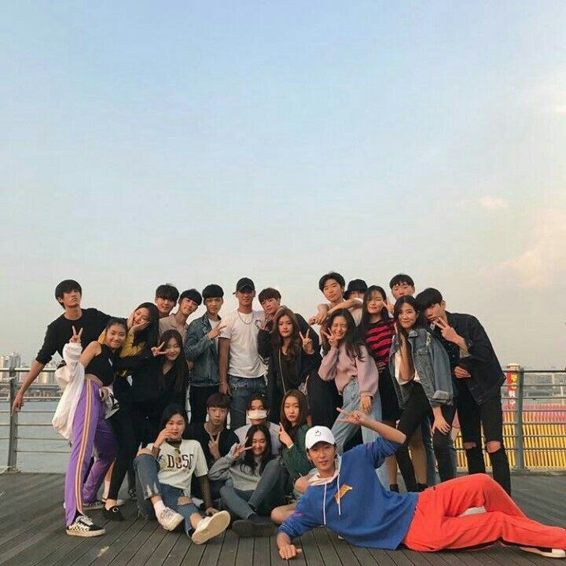
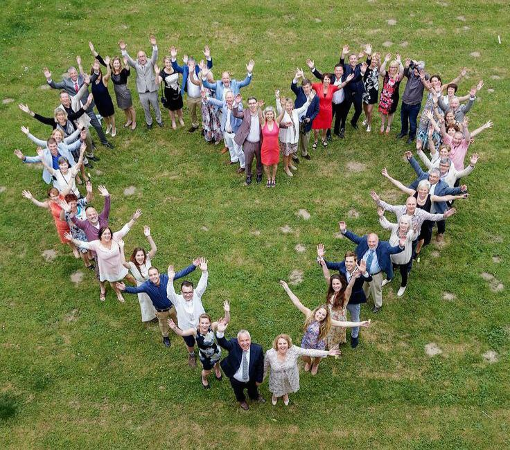
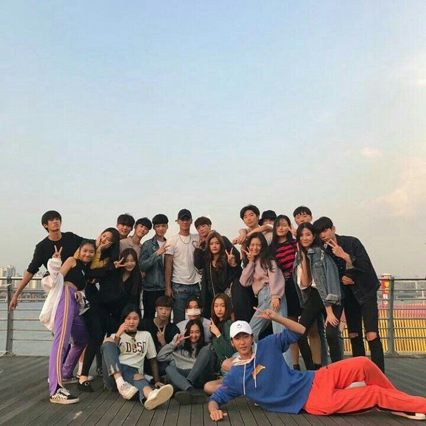
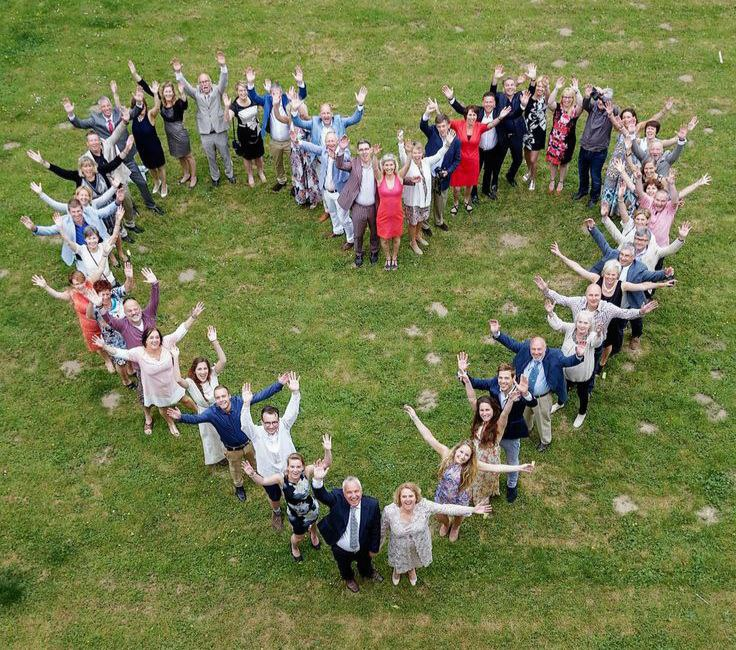

 





In a bid to enrich the academic journey of its brightest minds, Volant University orchestrated an exceptional excursion for its scholarship and outstanding students. The enthralling expedition unfolded against the backdrop of England's rich history and cultural heritage, weaving together an unforgettable tapestry of learning and exploration.
The Tower of London, standing as a sentinel of history, unfolded its secrets to the eager scholars. Amidst the ancient stones, tales of monarchs and intrigues echoed, offering a tangible connection to the nation's past. Stonehenge, a mystical marvel, sparked contemplation on the mysteries of ancient civilizations, leaving an indelible mark on the curious minds.
The British Museum, a treasure trove of human history and culture, served as a captivating classroom. Students marveled at artifacts from across the globe, fostering a global perspective and appreciation for diverse civilizations.Beyond the academic pursuits, the excursion embraced the vibrant essence of England. From strolling through quaint villages to savoring local delicacies, students experienced the cultural heartbeat of the nation.The pinnacle of the excursion was not just witnessing history but actively participating in it. Interactive workshops allowed students to delve into the nuances of literature, art, and history, fostering a holistic understanding of the subjects they study within the university's walls.
As the curtain fell on this literary odyssey, Volant University's scholarship students returned with a newfound appreciation for the interplay of academia and culture. The excursion not only broadened their intellectual horizons but also forged lasting bonds among the bright minds destined to shape the future. This venture stands as a testament to Volant University's commitment to nurturing not only scholars but well-rounded individuals poised to make a profound impact on the world.